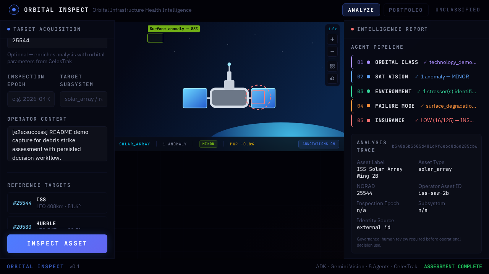
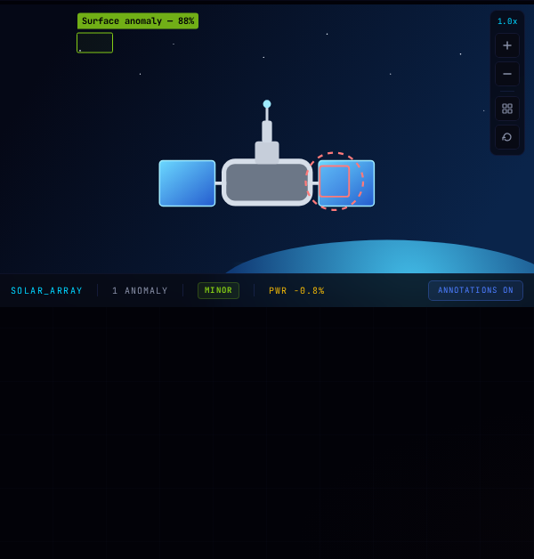
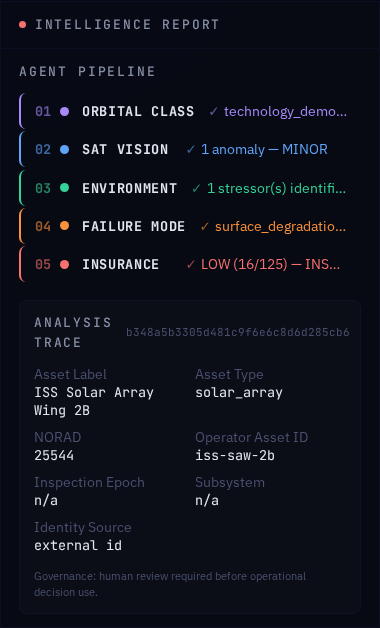
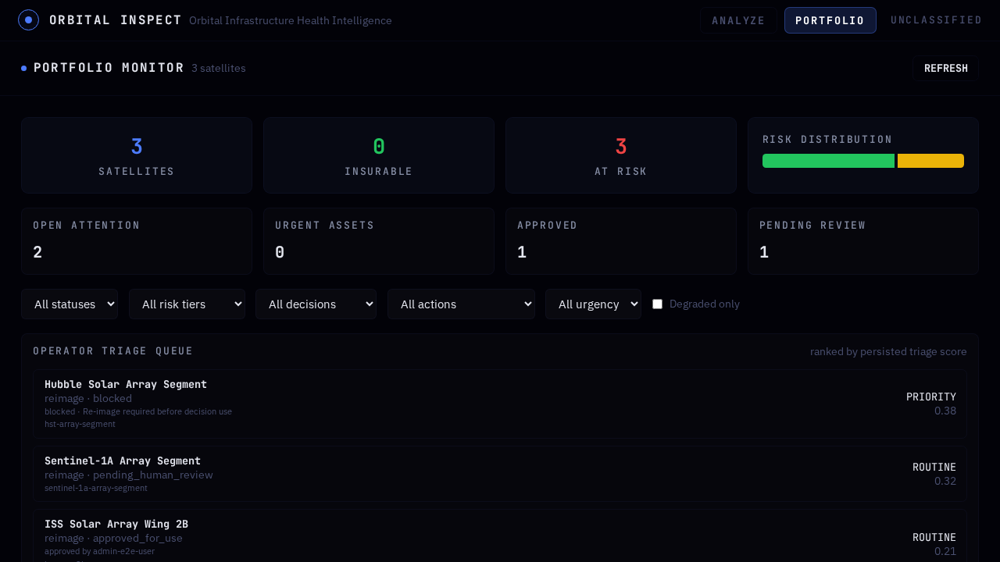

Satellite evidence triage that shows source quality, gaps, and review-required actions before underwriting claims are allowed.

LLM synthesis is bounded by schemas, source freshness, artifact hashes, confidence, and explicit negative evidence records.
Public mode nulls unsupported power impact, total-loss probability, physical dimensions, and financial exposure unless the required measurement chain exists.



Responsive analysis regions, accessible uploads, evidence freshness, degraded stages, and review-required reasons sit beside the recommendation.
Public-source risk intelligence for mission teams, insurers, and defense reviewers who need traceability before confidence.